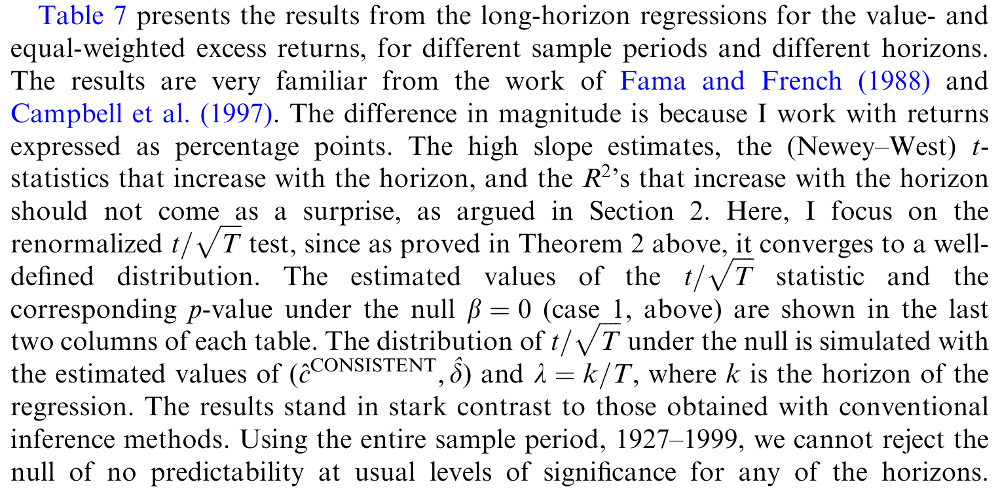
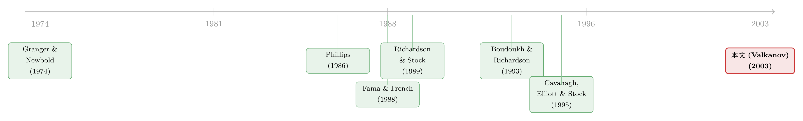

回归用得越「长」，越容易看见根本不存在的东西
本文读的是 Valkanov (2003, Journal of Financial Economics)：当我们把收益率、股利率这类序列在时间上「滚动加总」成长期变量再做回归，得到的 t 统计量根本不会收敛到任何良定义的分布——它会随着重叠区间的增大而「爆炸」。也就是说，长期回归几乎总能找到「显著」结果，无论两个变量之间是否真有结构性关系。作者证明了这一点，并给出一个简单的解药：把 t 除以 \(\sqrt{T}\)。
1 一个让所有人都「赢」的回归
先说一个让人不太舒服的经验事实。
在收益可预测性的文献里，有一类反复出现的「魔法」：当你用股利率 (dividend yield) 去预测下一个月的股票收益，回归系数往往又小又不显著，\(R^2\) 低得可怜；可一旦你把被解释变量换成未来一年、三年、五年的累计收益，奇迹就发生了——系数变大了，t 值上去了，\(R^2\) 甚至能爬到 0.3 以上。Fama and French (1988)、Campbell and Shiller (1988) 都报告过这种「随着预测期延长，显著性单调上升」的现象。在 Fisher 效应（名义利率与通胀一对一变动）的检验里，Mishkin (1992)、Boudoukh and Richardson (1993) 也看到了类似的图景。
于是大家形成了一种朴素的直觉：把数据加总成长期变量，等于在「强化信号、削弱噪声」——短期里被噪声淹没的关系，在长期里浮出了水面。
听上去很有道理。但本文作者偏偏要问一句煞风景的话：这些「越长越显著」的结果，到底是因为长期回归更有力量（power），还是仅仅因为我们用错了临界值（size distortion）？
这个问题之所以致命，是因为它直接关系到过去二十年里一大批「发现了可预测性」的论文还站不站得住脚。
2 真正的病根：加总，会改变变量的「随机阶」
要理解这篇论文，只需要抓住一个核心，剩下的全是它的推论。
这个核心是：把一个 I(0)（平稳、零阶单整）的序列，在一段「占样本非平凡比例」的窗口上滚动求和，得到的新变量，渐近地会像一个 I(1)（一阶单整、带单位根）的序列那样行为。
直觉并不难。一个零阶单整序列（比如月度收益）本身没有记忆，是围绕均值上下跳动的噪声。可一旦你把连续 \(k\) 期的它加起来，而且 \(k\) 不是固定的 12 或 60，而是随样本一起长大的一个比例——比如「样本的三分之一」——那么相邻两个长期变量 \(Z_t^k\) 和 \(Z_{t+1}^k\) 之间会重叠掉绝大部分项，差别只在头尾各一项。这种构造出来的序列，会表现出极强的持续性，看起来就和随机游走（一个典型的 I(1) 过程）别无二致。
这就是问题的源头。两个本来独立的平稳序列，一旦各自被加总成「伪 I(1)」，再放进同一个回归里，就会重演 Granger and Newbold (1974) 与 Phillips (1986) 笔下那个著名的伪回归 (spurious regression) 故事：两个统计上独立的持续变量之间，会冒出一个看似显著的相关。
但作者很谨慎地指出，长期回归的问题比伪回归更深一层。差别有两点：
- 第一，伪回归里两个变量「本来就是」I(1)；而长期回归是人为地用滚动加总把随机阶改掉了，于是斜率估计量、它的 t 统计量、以及 \(R^2\) 的极限分布都变成了非标准的「怪东西」。
- 第二——也是更要命的——即便两个变量之间真有一个结构关系，长期回归的 t 统计量也倾向于拒绝它。 换句话说，用长期变量做的估计和检验，根本不能套用普通回归那套方法。
这里的关键限定词是「占样本非平凡比例」。如果你的重叠区间 \(k\) 是一个固定的小数字（不随 \(T\) 增长），那么经典渐近理论照样适用，最多需要修正一下序列相关。问题恰恰出在那些 \(k\) 随样本一起膨胀的设定上——而这正是长期回归文献里最常见的做法。
（关于「用更多年的数据反而买来更大的偏差」这件事，还可参见《用更多的数据，买来更大的偏差——长期预测回归里那场小样本幻觉》。）
3 模型：从数据生成过程到「爆炸」的 t 值
这是一篇计量理论文章，绕不开数学。我尽量把每一步的「为什么」讲清楚。
3.1 设定
底层的数据生成过程 (data-generating process) 是一个二元系统：
$$Y_{t+1} = a + b\,X_t + e_{1,t+1}$$
$$(1-\phi L)\,b(L)\,X_{t+1} = \mu + e_{2,t+1}$$
第一式是我们关心的预测回归：用 \(X_t\)（比如股利率、利率）去预测 \(Y_{t+1}\)（比如超额收益）。第二式说预测变量 \(X_t\) 自己是一个自回归过程，它最高的那个根 \(\phi\) 被单独提了出来，剩下的 \(b(L)\) 是可逆的多项式。
最关键的一笔，是对这个最高根的局部到单位根 (local-to-unity) 参数化：
$$\phi = 1 + c/T$$
参数 \(c\) 衡量 \(\phi\) 偏离单位根的程度，\(c=0\) 恰好是单位根的情形。为什么要这么写？因为现实中的股利率、通胀、短期利率这些预测变量，高度持续但又未必真有单位根——它们在有限样本里「长得像」随机游走，但严格说是平稳的。用 \(\phi=1+c/T\) 这种「随样本以速率 \(T\) 趋近于 1」的写法，恰好能把这种「介于平稳与单位根之间」的暧昧状态刻画出来。代价是引入了一个讨厌参数 (nuisance parameter) \(c\)，它无法仅凭单条时间序列被一致估计——这一点后面再说。
3.2 长期变量与重叠比例
长期变量就是滚动和：
$$Z_t^k = \sum_{i=0}^{k-1} Y_{t+i}, \qquad Q_t^k = \sum_{i=0}^{k-1} X_{t+i}$$
而那个决定一切的设定是：重叠区间是样本量的一个固定比例
$$k = [\lambda T], \qquad 0 < \lambda < 1$$
\(\lambda\) 固定、\(T\) 趋于无穷，于是 \(k\) 也跟着趋于无穷。正是这个「\(\lambda\) 不消失」的设定，让加总改变了随机阶。
3.3 FCLT：部分和收敛到扩散过程
接着，一个自然的工具登场了：泛函中心极限定理 (Functional Central Limit Theorem, FCLT)。它告诉我们，标准化后的部分和会弱收敛到布朗运动：
$$\Big(\tfrac{1}{\sqrt{T}\,\sigma_{11}}\textstyle\sum_{i=0}^{[sT]} e_{1,i},\ \tfrac{1}{\sqrt{T}\,\sigma_{22}}\sum_{i=0}^{[sT]} e_{2,i}\Big) \Rightarrow \big(W_1(s),\,W_2(s)\big)$$
其中 \(W_1,W_2\) 是两个标准维纳过程，相关系数 \(\delta = \sigma_{12}/(\sigma_{11}\sigma_{22})\)。而由于 \(X_t\) 是局部到单位根的，它的部分和收敛到一个 Ornstein–Uhlenbeck 过程 \(J_c(s)\)：
$$dJ_c(s) = c\,J_c(s)\,ds + dW_2(s), \qquad J_c(0)=0$$
注意 \(c=0\) 时 \(J_c\) 就退化成普通的维纳过程 \(W_2\)——单位根的极限。讨厌参数 \(c\) 就藏在这里。
有了这些「积木」，作者证明了一条引理（Lemma 1）：长期变量 \(Z_t^k\)、\(Q_t^k\) 这些经过重新标度的部分和，会弱收敛到扩散过程的泛函。比如当 \(b=0\) 时，\(\tfrac{1}{\sqrt{T}\,\sigma_{11}}Z_t^k \Rightarrow W_1(s+\lambda)-W_1(s)\)——一个维纳过程在长度 \(\lambda\) 的窗口上的增量。这正是「加总把噪声变成了持续过程」的数学表达。
3.4 核心结论：t 统计量以 \(\sqrt{T}\) 的速率发散
为了表述极限分布，作者定义了三个泛函 \(F_1,F_2,F_3\)。其中刻画 t 统计量极限的是 \(F_2\)：
$$F_2(A(s),B(s)) \equiv \frac{\int_0^{1-\lambda} A(s)B(s)\,ds}{\Big[\int_0^{1-\lambda}(A(s))^2\,ds\,\int_0^{1-\lambda}(B(s))^2\,ds - \big(\int_0^{1-\lambda} A(s)B(s)\,ds\big)^2\Big]^{1/2}}$$
于是 Case 1（\(b=0\)，用短期变量 \(X_t\) 去回归长期变量 \(Z_{t+1}^k\)）的核心结果是：
读懂这一个式子，整篇文章就通了。它说的是：原始的 t 统计量 \(t_{\hat b}\) 本身没有极限分布，它以速率 \(T^{1/2}\) 发散；只有把它除以 \(\sqrt{T}\)，得到的 \(t_{\hat b}/\sqrt{T}\) 才弱收敛到一个良定义（虽然非正态）的分布。
发散意味着什么？意味着样本越大、或者重叠 \(k=[\lambda T]\) 越大，t 值就越高。这就一举解释了 Fama and French (1988) 与 Campbell and Shiller (1988) 里那个「t 值随预测期单调上升」的现象——它根本不是力量的增强，而是临界值用错了导致的尺度扭曲。
3.5 四种情形：哪种长期回归才靠谱
作者把经验文献里的长期回归按「零假设（\(b=0\) 还是 \(b=b_0\neq 0\)）」和「回归元是短期 \(X_t\) 还是长期 \(Q_t^k\)」交叉成四种情形（Theorem 2–5），结论可以浓缩成一张「收敛速率表」：
| 回归元 \(X_t\) | 回归元 \(Q_t^k\) | |
|---|---|---|
| \(b=0\) | Case 1：\(\hat b\) 不一致；\(t=O_p(T^{1/2})\)；\(R^2=O_p(1)\) | Case 2：\(\hat b\) 超一致（速率 \(T\)）；\(t=O_p(T^{1/2})\)；\(R^2=O_p(1)\) |
| \(b\neq 0\) | Case 3：\(\hat b\) 不一致；\(t=O_p(T^{1/2})\)；\(R^2=O_p(1)\) | Case 4：\(\hat b\) 超一致；\(t=O_p(T^{1/2})\)；\(R^2\to_p 1\) |
几个值得反复咀嚼的结论：
- t 统计量在四种情形里全部以 \(T^{1/2}\) 发散——没有例外。所以不管哪种长期回归，都不能用渐近临界值做检验。
- 「长变量对短变量」（Case 1、3）的斜率估计量不一致，无论真关系是否存在。这是最坏的一档。
- 「长变量对长变量」（Case 2、4）的估计量反而超一致——以速率 \(T\) 收敛到真值，比平稳回归常见的 \(\sqrt{T}\) 还快。这告诉我们：要想把斜率估计准，应该两边都用长期变量。
- \(R^2\) 只在 Case 4 才依概率收敛到 1；其余三种情形里它根本不收敛。所以长期回归里一个「漂亮」的 \(R^2\)，绝不能解读为拟合得好。
这张表给出的是「收敛/发散速率」，它本身就是本文最硬的「量级」结果。\(O_p(T^{1/2})\) 这个记号的意思是：t 统计量的数量级随 \(\sqrt{T}\) 增长——样本翻四倍，虚假的 t 值大约翻一倍。这正是为什么解药如此简单：除以 \(\sqrt{T}\)。
4 解药与应用：被重新审视的两段旧公案
既然病根是 t 以 \(\sqrt{T}\) 发散，解药自然就是重新标度的统计量 \(t/\sqrt{T}\)。它的渐近分布虽非正态，但容易模拟，且只依赖 \(c\) 和 \(\delta\) 两个参数。作者借用 Richardson and Stock (1989) 和 Viceira (1997) 的论证说明：这个分布用相对小的样本就能很好地逼近，因此临界值可以现成算出来。
那个讨厌参数 \(c\) 怎么办？作者讨论了三条路：Stock (1991) 的中位数无偏估计（但置信区间往往太宽）、Cavanagh, Elliott and Stock (1995) 的 sup-bound 保守区间（但牺牲了力量），以及作者自己在 Valkanov (1998) 里提出的、利用经济模型的长期约束来一致估计 \(c\) 的办法（在收益/股利率的例子里可借助 Campbell–Shiller 的动态 Gordon 增长模型）。
把这套机器开回到经验数据上，作者重做了两段公案：Fama and French (1988) 的超额收益/股利率回归，以及 Boudoukh and Richardson (1993)、Mishkin (1992) 的长期 Fisher 效应检验。如表 7 所示，把临界值换成正确的（即对 \(t/\sqrt{T}\) 而非 \(t\) 来检验），那些原本「随预测期越拉越显著」的证据，绝大部分都站不住了。

Table 7: presents the results from the long-horizon regressions for the value- and
但作者也给了一个微妙而诚实的反转：如果用恰当的方式重新标度，长期回归在拒绝备择假设上，确实比它们的短期对应物略微更有力量一点。所以结论不是「长期回归一无是处」，而是——它确实可能更有力量，但过去文献报告的那种「显著」绝大多数是尺度扭曲的产物，而非力量的体现。这是一篇校正方法、而非全盘否定的论文。
5 文献脉络
把这条线索捋一遍，它的来龙去脉就清楚了。
最早的源头是伪回归：Granger and Newbold (1974) 用模拟敲响了警钟——两个独立的随机游走回归在一起会得到虚假的显著。Phillips (1986) 给了它严格的渐近理论，并首次说明在伪回归里 \(t/\sqrt{T}\) 会收敛到一个良定义的分布——这正是本文解药的思想原型。
另一条线是收益可预测性的实证：Fama and French (1988)、Campbell and Shiller (1988) 报告了「长期回归更显著」，掀起了长期回归的热潮；Mishkin (1992) 和 Boudoukh and Richardson (1993) 把同样的做法搬到了 Fisher 效应上。

与此同时，怀疑的声音也在累积：Hodrick (1992) 的模拟说有力量增益，Goetzmann and Jorion (1993) 的模拟说有尺度扭曲，但谁都没给出解析答案。方法论上，Richardson and Stock (1989) 用 FCLT 处理了多年资产收益的单变量回归，Cavanagh, Elliott and Stock (1995) 处理了「近单整回归元」的推断，Stambaugh (1999) 系统刻画了预测回归的偏误。
本文的位置，就是把这些零散的碎片统一起来：用「重叠占样本固定比例 + 局部到单位根」这一对设定，把四种长期回归一网打尽，给出精确的收敛速率，并给出一个通用的 \(t/\sqrt{T}\) 解药。它既是对 Richardson and Stock (1989) 框架的推广（他们的结果是这里的特例），也是对那一整片「越长越显著」实证的清算。
（这条收益可预测性的争论后来还有许多回响，可参见《股利收益率真能预测收益吗？——一桩被「标准误」改写的旧公案》 与《股利收益率到底能不能预测收益？》。）
6 评论与延伸（Q&A + 研究方向）
(a) 几个可能的疑问
Q：这和经典的「伪回归」到底有什么不一样？
伪回归里两个变量「本来就是」I(1)。这里的变量本来是 I(0)，是滚动加总人为地把它变成了伪 I(1)。后果有二：一是斜率、t、\(R^2\) 的极限都成了非标准的扭曲分布；二是更要命的——即便真关系存在，长期回归的 t 也倾向于拒绝它。伪回归只谈「独立变量间的虚假相关」，本文还谈「真关系也被检验机制毁掉」。
Q：那是不是只要用 Newey–West 或 Hansen–Hodrick 标准误纠正序列相关就好了？
不够。很多人以为长期回归的毛病只是重叠造成的序列相关。但模拟显示，即便用了 Hansen and Hodrick (1980) 或 Newey-West (1987) 标准误，小样本分布仍然和渐近正态相去甚远。病根不在误差项的序列相关，而在加总改变了随机阶——这是标准误修正治不了的。
Q：为什么解药偏偏是除以 \(\sqrt{T}\)，不是别的？
因为理论给出的发散速率恰好是 \(O_p(T^{1/2})\)。t 统计量的数量级随 \(\sqrt{T}\) 增长，除以 \(\sqrt{T}\) 正好把这个发散因子抵消掉，剩下一个不依赖样本量、可模拟的良定义分布。速率是解析推出来的，不是凑的。
Q：「长变量对长变量」反而超一致，这是不是说该尽量两边都用长期变量？
从估计斜率的角度，是的——Case 2、4 的估计量以速率 \(T\) 收敛，比平稳情形的 \(\sqrt{T}\) 还快，\(R^2\) 在 Case 4 还能收敛到 1。但要注意：即使在这两种情形里，t 统计量照样以 \(\sqrt{T}\) 发散，检验仍然必须用 \(t/\sqrt{T}\)。估计得准 ≠ 检验能用普通临界值。
Q：那个讨厌参数 \(c\) 估不出来，会不会让整套方法没法落地？
这是真实的代价。\(c\) 无法仅凭单条序列一致估计。作者给了三条路：Stock (1991) 的区间偏宽，Cavanagh et al. (1995) 的 sup-bound 保守且损失力量，Valkanov (1998) 借经济模型的长期约束可一致估计但依赖模型设定正确。没有免费的午餐——要么牺牲力量，要么承担模型风险。
Q：这是不是意味着所有「长期可预测性」的结论都该扔掉？
不是。作者明确说这不是对长期研究的「定罪」。重新标度后，长期回归在拒绝备择假设上甚至比短期略有力量。问题在于过去报告的显著性绝大多数是用错临界值造成的尺度扭曲，而非力量。该扔的是结论的「显著性招牌」，不是长期回归这件工具本身。
(b) 几个可能的研究问题与提案
1. 把 \(t/\sqrt{T}\) 搬到公司债收益的长期可预测性上
【经济故事】信用利差、违约率这些预测变量同样高度持续，公司债的长期超额收益预测回归在文献里也常报告「越长越显著」。如果这些结果同样栽在尺度扭曲上，那「信用风险溢价可预测」的一部分证据可能要打折。 【可行性】高。数据用 TRACE + Lehman/ICE 指数构造长期累计债券收益，预测变量用利差/宏观持续序列，直接套用本文的四情形分类和 \(t/\sqrt{T}\) 检验即可。识别上最大的麻烦还是 \(c\) 的估计——可借助结构信用模型给出长期约束。
2. 外资持有比例对长期资本流动/收益的「长期回归」是否同样虚假？
【经济故事】跨国研究里常用「外资可投资度」「外资持股」去预测未来若干年的收益或波动，而持股比例本身是缓慢移动、近单整的序列。这正是 Case 1/3（长变量对持续短变量）的典型温床，斜率可能根本不一致。 【可行性】中。数据可用 FactSet/EPFR 的国别持股 + MSCI 收益。难点在外资持股的内生性叠加在计量扭曲之上，需要同时处理识别与本文的随机阶问题，工作量不小但 doable。
3. 把局部到单位根框架推广到面板长期回归
【经济故事】许多实证是「多国/多公司 × 长期变量」的面板，重叠加总的扭曲在面板里会和截面相关、个体固定效应纠缠在一起，现有的单序列 \(t/\sqrt{T}\) 未必直接适用。 【可行性】中偏低。需要把 FCLT 推广到面板（个体维度与时间维度的双重渐近），理论难度较大，但一旦做出来对实证有普适价值。属于偏理论的长期项目。
4. 用蒙特卡洛量化「重叠比例 \(\lambda\)」对真实流动性预测回归的扭曲幅度
【经济故事】流动性指标（Amihud、买卖价差）持续性极强，常被用来做长期收益预测。一个直接有用的工作是：固定一组现实参数，模拟出在不同 \(\lambda\) 下，朴素 t 检验的实际拒绝率有多离谱，给实证工作者一张「查表」式的警示卡。 【可行性】高。纯模拟，无需新数据，可在本文框架内直接做出可视化的尺度扭曲曲线，作为方法论附录或独立短文都合适。
7 我的判断
这篇论文的贡献是「以一驭多」式的：它没有满足于「某个长期回归在某组参数下有尺度扭曲」这种个案模拟，而是用「重叠占样本固定比例 + 局部到单位根」这一对设定，把整片长期回归文献装进了一个统一的解析框架，给出精确的收敛/发散速率，并配上一个一行就能用的解药（除以 \(\sqrt{T}\)）。在一个长期被「跑个蒙特卡洛看看」主导的领域里，这种「把推断放到坚实地基上」的工作格外有价值。
要说对识别和适用性的担忧，我有两点。其一是那个讨厌参数 \(c\)：解药的分布依赖它，而它无法被一致估计，三条退路要么宽要么保守要么依赖模型——这意味着「正确的临界值」在实践中仍带着一层不确定性，论文把难题从「t 值错了」转移成了「\(c\) 不好定」，并没有彻底消解。其二是渐近逼近在真实样本下的精度：作者论证小样本就能很好逼近极限分布，但金融数据动辄结构断点、肥尾、异方差，这些都可能让逼近退化，值得对每个具体应用单独做稳健性。
我接下来最想看到的，是把这套框架系统地搬到信用市场和外资持有人这两片实证上——它们的预测变量持续性强、长期回归用得多，却很少有人认真检查过随机阶的扭曲。如果那里也藏着一批「越长越显著」的虚假证据，那这篇 2003 年的老文章，还能再清算一轮。
参考文献
Boudoukh, J., Richardson, M. (1993). Stock returns and inflation: a long-horizon perspective. American Economic Review 83(5), 1346–1355.
Campbell, J., Shiller, R. (1988). The dividend-price ratio and expectations of future dividends and discount factors. Review of Financial Studies 1(3), 195–228.
Cavanagh, C., Elliott, G., Stock, J. (1995). Inference in models with nearly integrated regressors. Econometric Theory 11(5), 1131–1147.
Fama, E., French, K. (1988). Dividend yields and expected stock returns. Journal of Financial Economics 22(1), 3–25.
Goetzmann, W., Jorion, P. (1993). Testing the predictive power of dividend yields. Journal of Finance 48(2), 663–679.
Granger, C., Newbold, P. (1974). Spurious regressions in econometrics. Journal of Econometrics 2(2), 111–120.
Hansen, L., Hodrick, R. (1980). Forward exchange rates as optimal predictors of future spot rates. Journal of Political Economy 88(5), 829–853.
Hodrick, R. (1992). Dividend yields and expected stock returns: alternative procedures for inference and measurement. Review of Financial Studies 5(3), 357–386.
Mishkin, F. (1992). Is the Fisher effect for real? Journal of Monetary Economics 30(2), 195–215.
Newey, W. K., West, K. D. (1987). A simple positive semi-definite, heteroskedasticity and autocorrelation consistent covariance matrix. Econometrica 55(3), 703–708.
Phillips, P. (1986). Understanding spurious regressions in econometrics. Journal of Econometrics 33(3), 311–340.
Richardson, M., Stock, J. (1989). Drawing inferences from statistics based on multi-year asset returns. Journal of Financial Economics 25(2), 323–348.
Stambaugh, R. (1999). Predictive regressions. Journal of Financial Economics 54(3), 375–421.
Stock, J. (1991). Confidence intervals for the largest autoregressive root in U.S. macroeconomic time series. Journal of Monetary Economics 28(3), 435–459.
Valkanov, R. (1998). The term structure with highly persistent interest rates. Unpublished working paper, University of California, Los Angeles.
Valkanov, R. (2003). Long-horizon regressions: theoretical results and applications. Journal of Financial Economics 68(2), 201–232.